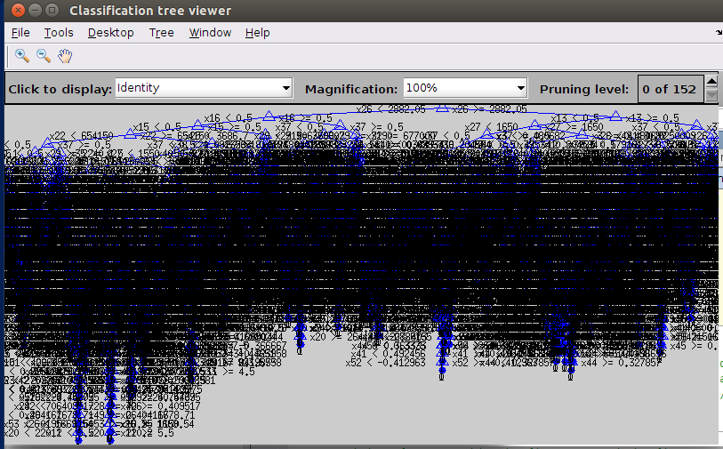
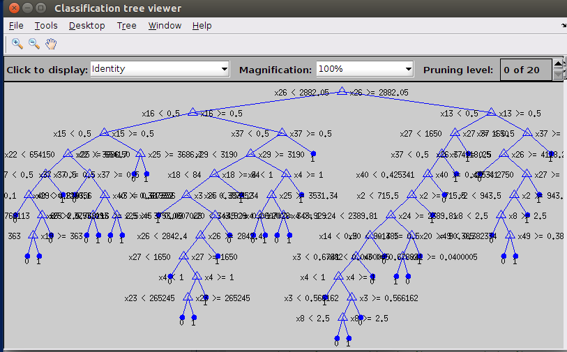
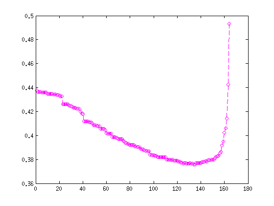
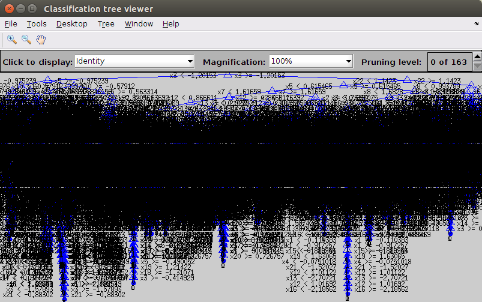
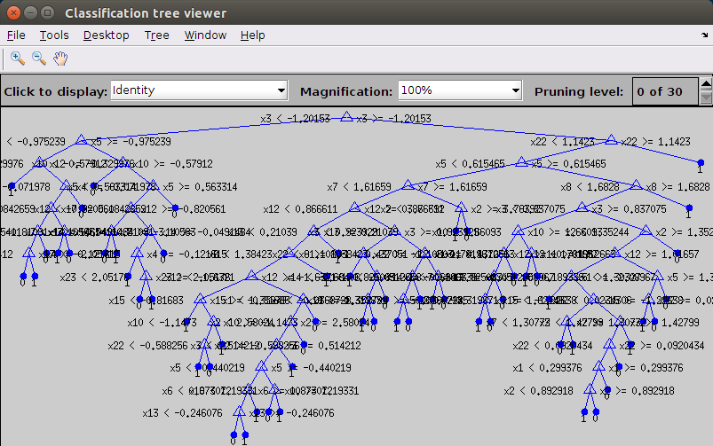

Lesson 4: Tree model for Classification and Regression
Author: Erhu Du
Supervisor: Neal Davis
University of Illinois at Urbana-Champaign
Fall 2015
Contents
Data: Online news data from UCI
This dataset is a summary of some articles published by Mashable. The data has 39644 rows and 61 columns (corresponding to 58 predictive attributes, 2 non-predictive attributes and 1 numerical labels about article popularity). Please refer to website (http://archive.ics.uci.edu/ml/datasets/Online+News+Popularity) for more information about this dataset.
Load data from PC, skip the first row and the first two columns
clear all; mydata = csvread('data_OnlineNewsPopularity.csv', 1, 2); % skip the first row and the first two columns features = mydata(:, 1:58); % all the predictive features labels = mydata(:, 59); % numerical labels
Here we need to transfer the original labels into binary labels. Each article should be either popular (label is more than median value, indicated by 1), or not popular (label is less than median value, indicated by 0)
value = median(labels); id_p = find(labels > median(labels)); % popular articles id_np = setdiff(1:39644, id_p); % not popular labels(id_p) = 1; labels(id_np) = 0; clear id_p id_np value
The names of features of this data are:
featureNames = {
'n_tokens_title'
'n_tokens_content'
'n_unique_tokens'
'n_non_stop_words'
'n_non_stop_unique_tokens'
'num_hrefs'
'num_self_hrefs'
'num_imgs'
'num_videos'
'average_token_length'
'num_keywords'
'data_channel_is_lifestyle'
'data_channel_is_entertainment'
'data_channel_is_bus'
'data_channel_is_socmed'
'data_channel_is_tech'
'data_channel_is_world'
'kw_min_min'
'kw_max_min'
'kw_avg_min'
'kw_min_max'
'kw_max_max'
'kw_avg_max'
'kw_min_avg'
'kw_max_avg'
'kw_avg_avg'
'self_reference_min_shares'
'self_reference_max_shares'
'self_reference_avg_sharess'
'weekday_is_monday'
'weekday_is_tuesday'
'weekday_is_wednesday'
'weekday_is_thursday'
'weekday_is_friday'
'weekday_is_saturday'
'weekday_is_sunday'
'is_weekend'
'LDA_00'
'LDA_01'
'LDA_02'
'LDA_03'
'LDA_04'
'global_subjectivity'
'global_sentiment_polarity'
'global_rate_positive_words'
'global_rate_negative_words'
'rate_positive_words'
'rate_negative_words'
'avg_positive_polarity'
'min_positive_polarity'
'max_positive_polarity'
'avg_negative_polarity'
'min_negative_polarity'
'max_negative_polarity'
'title_subjectivity'
'title_sentiment_polarity'
'abs_title_subjectivity'
'abs_title_sentiment_polarity'
};
Fit a classification tree based on original dataset
mytree = fitctree(features, labels); view(mytree, 'Mode', 'graph');
The original tree has too much leaves. We need to prune the tree.
The best size of the tree can be found using cvLoss function. This will take around 15 min, you can now take a break and come back after a cup of coffee.
[E1,~,~,bestlevel] = cvLoss(mytree, 'SubTrees','All','TreeSize','min'); % get best level = 136 plot(E1, 'm--o')

prune the tree to its best level and visualize the pruned tree
subtree = prune(mytree,'Level', bestlevel); view(subtree, 'Mode', 'graph')
Fit a classification tree after PCA
feature_pca = GetPCAFeature(features, 0.85); % dimension has been reduced from 58 to 23 size(feature_pca) mytree_pca = fitctree(feature_pca, labels); view(mytree_pca, 'Mode', 'graph'); [E2,~,~,bestlevel] = cvLoss(mytree_pca, 'SubTrees','All','TreeSize','min'); % the best level is 139 plot(E2, 'm--o') subtree_pca = prune(mytree_pca, 'Level', bestlevel); view(subtree_pca, 'Mode', 'graph')
ans =
39644 23
   Reference
K. Fernandes, P. Vinagre and P. Cortez. A Proactive Intelligent Decision Support System for Predicting the Popularity of Online News. Proceedings of the 17th EPIA 2015 - Portuguese Conference on Artificial Intelligence, September, Coimbra, Portugal.